Matthew Winston Brown v. Her Majesty The Queen
This transcript was made with automated artificial intelligence models and its accuracy has not been verified. Review the original webcast here.
Justice Wagner (00:00:24): Bonjour à tous.
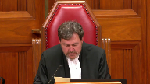
Veuillez-vous asseoir.
Le cas de Matthew Winston Brown contre la Majesté du roi, pour l’appellant Matthew Winston Brown, Sean Fagan, Michel Bidolf, pour l’intervenant de l’Association des libertés civiles canadiennes, Anil K. Kapoor, et Anna Akhtemikchok, pour l’intervenante du Conseil d’empowerment, Carter Martel, et Anita Sigetty, Sarah Rankin, et Maya Kotob, pour l’intervenante de l’Association des lois criminels, Lindsay Daviau, Eric Neubauer, pour le responsable de la Majesté du roi, Deborah J. Alford, pour l’intervenante du Général de l’Occident, Michael H. Morris, Royal Lee, et Rebecca Sewell, pour l’intervenante du Général de l’Ontario, Michael Perlin, Jeffrey Wingarden, pour l’intervenante du Général de Manitoba, Amy Cutler, pour l’intervenante du Général de la Colombie-Britannique, Lara Vizoli, pour l’intervenante du Général de Saskatchewan, Noa Verniskowski, pour l’intervenante du Général de l’Éducation et de l’Action, Lara Kinkartz, et Megan Stephens.
Mr. Feigin.
Speaker 1 (00:01:57): Chief Justice, Justices, Matthew Brown intended on having a relaxing, calm evening with his friends following his university exam period.
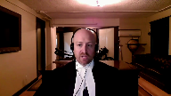
He intended on consuming some magic mushrooms and alcohol in the safety of his friend’s house where they were going to watch movies and play board games.
He did not intend nor could he have foreseen what happened next.
Not the extreme intoxication, not the running naked and barefoot in minus 20 degree weather, and certainly not the break and enter and assault of Miss Hamnet.
And the principles of fundamental justice that run at the core of our criminal justice system hold that he should not be held criminally liable for these actions.
The Alberta Court of Appeal erred in overturning the Honourable Justice Dewitt’s Declaration of Invalidity of Section 33.1.
I will be addressing the application of Section 7 and 11d.
My colleague Miss Bidulph will be addressing the Section 1 issue.
I intend to keep my submissions to less than 15 minutes.
In my submissions, I intend on addressing three points.
First, the proper scope of 33.1 and the fact that it does not include objective foreseeability of extreme intoxication nor violence.
Two, even if it does possess those elements, it does not solve this Section 7 issue.
And three, if Section 33.1 does possess objective foreseeability, Matthew Brown should still be entitled to an acquittal.
My first point, the proper interpretation of Section 33.1 is one that does not include objective foreseeability of extreme intoxication nor of violence.
All that is required by way of mental element is that which was established by this court in Bouchard Le Brun, that the accused voluntarily consumed a substance which he or she knew was or should have known was an intoxicant and the risk of becoming intoxicated was or should have been within his or her contemplation.
Contrary to Justice Slatter’s reasons, 33.1 is not limited to dangerous intoxicants.
It’s not limited to illegal substances, illicit substances, nor is there an exception for prescribed medications.
In order for 33.1 to have an objective foreseeability of extreme intoxication component, this court would have to read it in.
And this would be an impermissible level of reading in and it would be the equivalent of legislating where Parliament chose not to do so.
Parliament specifically and intentionally excluded an objective foreseeability of extreme intoxication in Section 33.1.
If they wanted to include that requirement, they could have done so quite easily.
The verbiage was available to them.
They could have termed this section, for example, where a person consumes an intoxicant in a manner that they know or ought to have known could render them incapable of consciously controlling their behaviour.
They chose not to do that.
Mr. Fagan.
Justice Kasirer (00:05:15): Mr. Fagan, how do you respond to the proposition that there’s a common sense connection between extreme intoxication and violence, and that Parliament acknowledged that and acted upon it, and that that perhaps was not something in the mind of the court in Daviau?
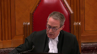
Speaker 1 (00:05:38): There may be a common sense connection but certainly it’s not a causative connection and this fact does not solve the section 7 and 11d issue because the minimal mental element for any criminal offense is a marked departure and even though there may be a common sense connection there needs to be more than that.
There needs to be foreseeability of violence or foreseeability of the mental state that led to violence.
So, even if section 33.1 were to contain objects of force…
Justice Rowe (00:06:17): It’s interesting you say that foreseeability of the mental state that would lead to violence, it almost suggests somehow that there’d be a predilection towards aggressive behaviour.
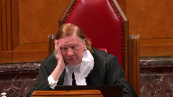
But if you’re suffering under delusions, you may be drawn into doing something which is quite violent, but doesn’t arise from the predilection, but really arises from the profound state of the delusion.
For example, God told me to do it.
There’s nothing inherently violent about that if you honestly believe in that altered state, that you were under a divine commandment.
Speaker 1 (00:07:05): And it’s the appellant’s position that section 33.1 doesn’t require that.
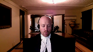
It doesn’t have as an element the objective foreseeability of violence nor of extreme intoxication.
And both of these things would be necessary in order for the for the section to pass section 7 and 11b scrutiny.
Justice Moldaver (00:07:29): Thank you.
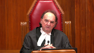
I just want to follow up on your suggested how the legislation could work.
What’s this ought to know on the bin?
What does the accused have to show that he or she did to do the least checking on whether or not some drug that they’re seeing at a party that comes from the street, but they’re told it’s magic mushrooms, could be anything, but let’s assume they’re told it’s magic mushrooms.
What do they have to do in order to sort of satisfy your ought to have known test?
That’ll be the next argument the defense will be making in cases like this.
We’re going to require everybody to become toxicologists.
So just help me out.
What should they do to satisfy the ought to have known over and above just shutting their eyes and doing nothing?
Speaker 1 (00:08:34): But one of the things most critically that they ought to have known is that this substance and the quantity in which they consume the substance could lead to a state of intoxication akin to automatism.
But it’s the appellant’s position that this section is unsalvageable and that the proper way to deal with this sort of behavior is for Parliament to enact different legislation, a different offence, one that was suggested in the Parliamentary Committee such as dangerous intoxication.
Because even if Section 33.1 were to be read in to include objective foreseeability, it still does not solve the violation of the principle of fundamental justice laid out by Madam Justice McLaughlin and Martineau that the stigma attached to the offence and available penalties must reflect the particular nature of the crime.
So even if ought to have known is read into 33.1, the individual is being found guilty of the wrong offence.
There must be an element of personal fault in regard to a culpable aspect of the mens rea and that’s a principle of fundamental justice stemming from D’Souza and the mental element in relation to self-induced intoxication is not connected.
Logically, there’s no necessary link between that mental element and the essential element, the actus reus of assault which is laid out in Section 265 of the Criminal Code, intentional application of force.
Justice Moldaver (00:10:23): Suspect you’d be back again saying the dangerous intoxication is unconstitutional as well.
You would find a way Everybody keeps throwing this
Overlapping speakers (00:10:33): And maybe we’ll say no.
Justice Moldaver (00:10:35): who knows?
But everybody keeps throwing it around and yet, you know, I think just if I wanted to right now I could find a number of holes potentially in this notion of dangerous intoxication that everybody talks about.
Speaker 1 (00:10:54): And certainly it would not be perfect, but there, it would likely still violate Section 7 and 11d of the Charter, but it would be easier to justify under Section 1 of the Charter.
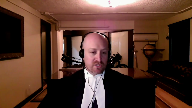
Moving on to my final point, sir.
If objective foreseeability of extreme intoxication were to be read into the provision, Matthew Brown should still be entitled to an acquittal.
And that is because Matthew Brown’s self-induced intoxication was not a marked departure and he could not have foreseen becoming intoxicated to the state of automatism.
When determining whether a person could foresee the state of extreme intoxication, circumstances matter.
The considerations should be the environmental circumstances, the personal circumstances, the quality of the substance consumed, as well as the quantity of the substance consumed.
With respect to the environmental circumstances, what sort of environment did this intoxication take place in?
Did it take place in a busy bar, on a busy highway, on a rooftop patio, in a bar?
Did it take place surrounded by dangerous work equipment or tools, weapons, or, as in the case of Mr. Brown, did it take place in a safe environment, in the home of a trusted friend, and with the intention of not leaving the house, playing board games, and watching a movie?
Essentially, these are circumstances that are as safe as it gets.
With respect to the personal circumstances, what did Mr. Brown know, or a person in the shoes of Mr. Brown know, and what was his proclivity for violence?
Well, Mr. Brown had no history of violence, whether intoxicated or sober, no violent tendencies whatsoever.
He had one prior experience with psilocybin mushrooms, which was a calming experience that gave him a fuzzy feeling.
There was no indication to him, or a person in his shoes, that he could become intoxicated to the level of an automaton.
With respect to the quality and the quantity of the substance consumed, the trial justice, Madam Justice Hollins, found that there was no reliable evidence as to the amount of the substance consumed.
The court heard expert evidence and made findings of fact, accepting the expert’s testimony that magic mushroom consumption is not typically correlated with criminal activity or violence, but if it is, sorry, if there are any of the events that did come before the experts, typically the violence was self-inflicted harm, as opposed to harm on another person.
So in all the circumstances, even if an objective foreseeability of extreme intoxication could be read into this provision, Matthew Brown should be entitled to an acquittal.
Justice Kasirer (00:13:59): Regan, can I roll you back just a bit to your discussion about penal negligence as a possible route forward here for Parliament if it can’t be read in, and I understand your position.
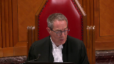
One thing I didn’t understand in reading your factum was you seem to suggest that the actus reas and mens rea need to happen simultaneously, you say that at paragraph 38 of your factum.
And I’m wondering what you have to say in respect of Justice Slater’s reference to Creighton, which strikes me as a useful tool here, that the idea that mens rea need not correspond to the consequence of the act, that symmetry is not required between mens rea and actus reas.
Is that a helpful way to think through the offence at 33-1?
Speaker 1 (00:15:07): It’s not of much assistance.
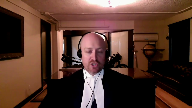
The principles of fundamental justice do hold that intent, either objective or subjective, need not extend to the full consequences of the unlawful act.
But in this case, the mens rea does not even extend to the actus reus, let alone the consequences of the actus reus.
In Creighton, the consequences were death.
There was no issue, there was no question, and I believe Creighton even admitted the actus reus of the offense of administering cocaine into another.
In D’Souza, the consequences were bodily harm.
There was no question that D’Souza intended to throw the bottle across the bar.
In Matthew Brown’s case, not only did Matthew Brown not intend the mental state that he was in, he did not intend the act of assaulting or breaking into Miss Hamnet’s home, nor did he intend the consequences, the injuries that she resulted.
So the principle that the court enunciated in D’Souza and Creighton is not directly applicable to the circumstances in Section 33.1.
And I note the time, and I want to leave sufficient time for my colleague, Miss Bidulph, to address the Section 1 issue.
So subject to any questions on Section 7 and 11D, those are my submissions.
Thank you very much.
Speaker 2 (00:16:35): Good morning, Chief Justice, Justices.
So as Mr. Fagan said, my submissions will focus on the Section 1 analysis.
As some of my submissions will be quite similar to what you heard from Mr. Gorlet a few weeks ago in the Sullivan and Chan hearings, I intend to use the bulk of my limited time today to address the elements of the Oakes analysis that he did not have time to address, which is minimal impairment and the final proportionality analysis.
Briefly, I’ll outline my submissions on pressing a substantial objective.
In my submission, only the protective purpose is the true purpose of this provision.
The accountability purpose is stated at too narrow a level of abstraction, and in reality it’s a description of the effects of the provision, not its purpose.
To understand what I mean here, in my submission it’s useful to look back at what actually makes a criminal law in Canada.
In the Margerine Reference, which is at tab 10 of our contents book, this Court held that a criminal prohibition is not merely a prohibition backed by a penalty enacted in a vacuum.
Instead, it has to be enacted for a valid criminal law purpose, which Justice Rand in that case defined as the evil or injurious or undesirable effect upon the public against which the law is directed.
So when we’re looking at the evil or injurious or undesirable effect upon the public here, what it is, is the commission of violent acts against others.
What section 33.1 seeks to do is to deter others from committing such acts while in a state of intoxication.
So in my submission is the protective purpose that ought to be, that ought to anchor the Oakes analysis here.
With respect to rational connection, again my submissions are brief.
The protective purpose depends for any rational connection on an assumption of deterrence, as the imposition of criminal liability on an individual can only protect others in the future from similar criminal criminal acts if it deters future intoxicated violence.
In the Court below, they founded this rational connection on the deterrence of the consumption of intoxicants and presumably therefore implicitly on the deterrence of the consumption of drugs.
On the deterrence of intoxicated violence.
But what we’re missing here in the record is that link between the consumption of intoxicants and violence.
Section 33.1 does not amend the common law, which already stipulates that intoxication is not and has never been a defense to a general intent crime.
All that section 33.1 does is remove the defense of automatism, where that automatism is caused by self-induced intoxication.
Justice Brown (00:19:13): I’m wondering if you’re suggesting too high a standard, Ms. Biddulph, in light of the court’s decision some years ago in Hutterian Brethren in particular, that section one analysis.
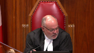
I mean, I read it as not really imposing much of an obligation on the state at all to show anything more than sort of a, I think the language was a reasonable prospect that the limit will further the objective to some extent, not that it will certainly do so.
And I wonder if what you’re sort of presposing here is maybe not certainty but a little more rigidity than that which was applied in Hutterian Brethren.
Speaker 2 (00:19:58): Well, in my submission, it’s really two different things.
The reasonable prospect standard is sort of the standard, but it’s a reasonable prospect of what.
And in answering that question of what, we look back to RJR MacDonald, which stated that at the rational connection stage, there must be a causal link between the purpose and the effects of the provision.
So that causal link need only be proven on a reasonable basis standard, but there still needs to be that causal link.
And that’s what we say is missing here.
There’s simply no evidence in the record of a causal link between the consumption of dissociative drugs, because to be clear, section 33.1 does not capture intoxication by alcohol.
That’s in the very preamble to the provision.
So is there a link between the consumption of dissociative drugs and violence?
There’s no evidence for that link in the record, and we cannot simply infer it based on an absence of evidence whatsoever.
So moving now to minimal impairment, my submissions are very much tied to Mr. Fagan’s submissions on the interpretation of the provision.
The reason why we say this provision is not minimally impairing of charter rights is because it does not say any of the things that the various attorneys general will ask you to read in at the section seven stage in order to avoid a constitutional infringement.
It does not require proof of any objective foreseeability of harm.
It does not require proof of any recklessness or negligence in consuming a substance.
And it does not require proof that the substance that was consumed was illicit in any manner or that it was consumed in a morally blameworthy manner.
The absence of all of those limitations is what takes this provision outside the bounds of minimal impairment.
Now, Justice Mulder, you raised the fact that other alternatives can also have potential constitutional issues.
But in my submission, that’s still no answer to the minimal impairment issue in this case.
It’s no answer because there is an interpretation of this provision available.
No, I’m not sure.
Justice Moldaver (00:21:54): All right, Mrs. Bedolph, I apologize for interrupting you.
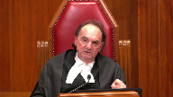
Your colleague said, here’s how you can do it, Parliament.
That’s all I was responding to.
And then he said, here’s another way to do it.
And that’s all I’m responding to.
So I’m not, for a moment, suggesting that foreseeability can be read in, objective or subjective, into this provision.
Speaker 2 (00:22:17): I apologize, Mrs. Moldaver, I guess I was attributing some of the Attorney General’s arguments to your question.
But the point is, the fact that there might be other less impairing alternatives does not mean that this provision is minimally impairing.
Because when you’re looking at the minimal impairment standard, the standard is less impairing, not not impairing.
So a less impairing provision can still impair charter rights just to a lesser degree.
And that’s what means that the provision that was originally enacted here, Section 33.1, is not minimally impairing.
So with respect to less impairing alternatives, the test is simply whether there’s a less drastic means of achieving the purpose of a provision in a real and substantial manner.
Here, Parliament could have required proof of a departure from the standard of care in consuming an intoxicant, coupled with some sort of objective foreseeability of a risk of harm or a risk of automatism resulting from consumption of that intoxicant.
If it had those requirements, it would still capture people who act in a morally blameworthy manner in intoxicating themselves to the point of automatism and committing violent offenses while excluding individuals who had no such morally moral blameworthiness in their consumption of an intoxicant.
Or Parliament could have created an entirely new offense that targets exactly what Parliament says is the problem here, excessive intoxication.
Justice Moldaver (00:23:40): Sorry, when you talk about no moral blameworthiness in terms of consuming it, are you talking about someone spiking your drink or because you have no idea or taking prescription drug in a way that you thought was appropriate?
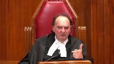
I don’t know what you’re saying, because…
Overlapping speakers (00:24:01): What I’m getting at is what I’m getting at is what I’m getting at is what I’m getting at is what I’m getting at is what I’m getting at is what I’m getting at is what I’m getting
Justice Moldaver (00:24:02): There’s no moral blameworthiness, seems to me, when you’re taking a drug like Magic Mushrooms.
You’re way ahead of me.
Speaker 2 (00:24:14): So what I’m getting at is the broadness of this provision.
It doesn’t capture just the consumption of illicit substances like magic mushrooms.
It also captures the consumption of things like prescription medication.
And I hope we can all agree that there’s no moral blameworthiness in consuming medication as prescribed to you.
If that medication then results in a state of automatism in which you commit a criminal offense, it would be captured by section 33.1.
And that’s why I say there are people who would not be morally blameworthy in their consumption of the intoxicant that are currently captured by the wording of section 33.1.
With respect to the offense of extreme intoxication or excessive intoxication causing bodily harm, that was an option that was open to parliament and it was something that parliament considered.
Its objective objection to such an offense seemed to be rooted in two things, punishment and labeling.
With respect to punishment, that’s not really a valid objection because parliament is parliament.
There’s nothing stopping it from legislating a broad sentencing range for any offense.
It could legislate a maximum sentence of 14 years or even life and no minimum sentence so that any sentencing judge can craft a fit sentence that captures the actual moral blameworthiness of the conduct.
With respect to labeling, parliament’s argument seemed to be that it would view it as unfair for a person to be convicted of say, intoxication causing bodily harm instead of aggravated assault, where their actions resulted in the wounding of another.
But in my submission, that argument seems really to be an argument based on stigma, as it suggests that the person should suffer the stigma of a criminal conviction for a particular offense and not a criminal conviction whatsoever.
Any arguments that are based on minimum thresholds of stigma are normally arguments for a specific mens rea, not arguments for no mens rea whatsoever.
So in my submission, these objections to various alternatives are not valid basis upon which this court can conclude that an offense of intoxication causing bodily harm or excessive intoxication or any other offense that actually captures the conduct targeted by parliament would not substantially achieve parliament’s purpose.
Because these alternatives exist, in my submission, section 33.1 cannot be minimally impairing.
Moving now to the final proportionality analysis.
We have to look- Before you get-
Justice Kasirer (00:26:40): Sorry to interrupt you, but before you get there, I want to circle back to Justice Brown’s comment because I’m wondering if you’re asking minimal impairment to do too much work here.
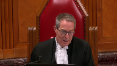
You know, there was a range of options before Parliament.
If you look at the debates before Parliament, there was strengths and weaknesses with all of them.
Parliamentarians took advice and opted.
I’m wondering if we might, because I’m just listening to you, it sounds like a lot of your arguments are really deleterious effects outweighing salutary benefit arguments rather more than minimal impairment arguments.
And I’m wondering if you’re kind of pushing us back to a pre-Hutterite mode where the court does too much work under that portion of Section 1.
Speaker 2 (00:27:33): or just to clarify, are you talking about too much work under proportionality or under minimal impairment?
Justice Kasirer (00:27:40): under minimal impairment and that some of your arguments might be best framed as deleterious effects that you find intolerable.
Speaker 2 (00:27:50): Well, in my submission, when we’re talking about minimal impairment, you do have to look at impairment on the charter right, which is the same as deleterious effects.
When you’re assessing deleterious effects, you’re looking at the deleterious effects on the individual, how significant is the impairment of their charter right.
Here, it’s the same thing when you’re looking at minimal impairment because you’re looking at whether the law impairs those charter rights, no more than necessary in order to achieve the objective.
Here, I guess my submissions are almost more of an over-breadth point than they are a final proportionality point because I’m arguing that Section 33.1 captures too broad of conduct, it captures too many people, it captures people who don’t act in a morally blameworthy manner in consuming an intoxicant, and it captures people who do not foresee that the consumption of a particular intoxicant, even if illicit, could result in the commission of a violent offense.
And so, because it captures all of those things, and there are there are alternatives available that would not capture those things, the provision is not minimally impairing.
That’s my only point.
So moving now to final proportionality.
The court below advanced several possible salutary effects of this provision.
For both Justice Kullar and Justice Slatter, they saw the salutary effects in the vindication of the dignity and self-worth of victims of crime, as well as in encouraging the reporting of intoxication-fueled violence.
In my submission, neither of those are salutary effects of this provision.
The idea that the vindication of a victim’s dignity and self-worth flows from the punishment of an individual who had no awareness that what they were doing was wrong is, with all due respect, a very crude conception of justice.
We don’t punish children who are under the age of 12, we don’t punish those who are not criminally responsible, or those who are in a state of automatism, simply because their actions result in the impairment of the dignity and self-worth of victims of crime.
In my submission, to punish the mentally innocent in contravention of the principles of fundamental justice in order to satisfy some sort of thirst for vengeance in the community, it can never be a salutary aspect of a law.
With respect to the idea that this provision encourages the reporting of-
Sorry, I’m going to have to-
With respect to the idea that this provision encourages the reporting of-
Justice Kasirer (00:29:58): And I’m going to have to interrupt you again.
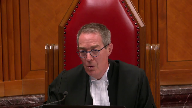
Thirst for vengeance, I think that’s what we would call in Quebec an effidotage.
It’s a bit of an overstatement.
Your colleagues on the other side speak of the equality interests of women and children.
Parliament was forefront of Parliament’s mind.
You weren’t talking about thirst for vengeance.
That was nowhere to be seen in the debates.
I think you’d be best to frame it in the language that Parliament used, where Parliament saw salutary effects, don’t you think?
Speaker 2 (00:30:38): Yes, and my only reference to vengeance simply comes from this court’s decision in RNMCA, where this court referred to vengeance as a sentencing principle that punishes people for the harm that they caused without regard to the reason why they did the act.
Justice Rowe (00:30:52): Denunciation?
Or do you mean vengeance?
It’s not quite the same.
Speaker 2 (00:30:58): No, it’s not the same, and I’m referring to vengeance as described in MCA, not denunciation.
Punishing people for the act alone without reason for their- without regard to the reason why they committed the act.
Now, with respect to the idea that this provision encourages the reporting of intoxication-fueled violence, in my submission, this is something for which the Crown actually does need to provide supporting evidence.
This comes from this Court’s decision in KRJ, which is at tab 9 of our condensed book.
In that case, Justice Karakatsanis required actual proof of the salutary effects of the law, statistical proof, not simply speculation as to the theoretical salutary effects.
This is because a rights limitation has to be demonstrably justified, not just theoretically justified.
There’s no proof that has been adduced by any Attorney General at any level of court to support the notion that Section 33.1 actually encourages the reporting of intoxication-fueled violence, or that its absence would somehow discourage that reporting.
As I see I’m out of time, thank you very much.
Subject to any further questions, those are my submissions.
Justice Wagner (00:32:00): Thank you very much.
Speaker 3 (00:32:04): Thank you Chief Justice, Justices.
I want to focus my submissions this morning subject to any direction from the court on the relationship between a breach of an individual’s Section 7 rights on the one hand and whether fundamental justice as a limiter on the other hand can take into account the interests of other interests, other community interests, and our submission is it depends what the nature of the breach is.
Where the accused Section 7 breach goes to, as in this case, goes to the contours of criminal liability.
Respectfully, the interests of other people in Section 7 have no role to play in Section 7.
Where there is a role to play is where we’re dealing with procedural rights that accrue to an accused person, such as disclosure, such as the ability to ask certain questions, and I’m thinking now of a sexual assault trial, where those expressions of the accused due process rights engage another person’s constitutional rights, and we see this most frequently in the right to privacy, in the hands of complainants.
In that circumstance, this court has balanced the interests at Section 7, but respectfully, when we’re considering the contours of criminal liability, that is to say, whether 30 years or whether 33-1 does what the Alberta Court of Appeal majority says it does, introduce a different fault standard for personal injury offences, general intent personal injury offences, the constitutionality of that cannot be mitigated or traversed or interrogated by reference to someone else’s constitutional right under Section 7.
Respectfully, the place for those social concerns, those societal concerns, are more properly interrogated, as I say, under Section 1 of the constitution.
Section 1 has a built-in architecture that is in its own way respectful of constitutional rights and at the same time flexible for this court to take into account addressing societal concerns.
Also, Parliament has the ability, if they wished, didn’t in this case, they wished to enact notwithstanding.
Justice Moldaver (00:34:45): Well, how does this work?
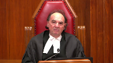
Your position is, and your colleagues, that there’s a real risk here that innocent people could get convicted.
That’s what I understand it.
And that is contrary to 711D, whatever you want.
So how do you frame Section 1, in a way?
How do we even get there if really the question that’s being asked is, okay, Section 1 allows us to, you know, slip up on the odd innocent person, but that’s the price society should be willing to pay.
We’ll convict a few innocent people to get a few people who aren’t.
How does that ever work?
Well, it might not ever work.
Well, that’s the answer.
Speaker 3 (00:35:28): In other words, it might be that parliament cannot fashion a law that is sufficiently tailored to take into account this particular kind of social issue.
On the other hand, parliament might be able to.
Parliament may satisfy this court that a redrafted penal negligence offense with a different kind of fault standard is sufficient limitation on constitutional rights, given the pressing and substantial nature of the concern, but respectfully, it ought to come here as a properly mature criminal offense that you’re able to evaluate against our constitutional norms and then, of course, under the pressing substantial concerns of occupied parliament’s time.
Justice Kasirer (00:36:16): Mr. Kapoor, if you’re ready to recognize the pressing of substantial concerns of women and children, would you concede that the accountability under Section 1 provides a means to redress the inequality experienced by women and children in the context of intoxicated gender-based violence?
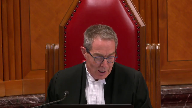
Speaker 3 (00:36:42): Well, I think to borrow from my colleague’s submission, much of this is sort of data-driven and the benefit of Parliament assessing this, and we have the benefit of their answer debates already, but in the manner in which you’re suggesting, Parliament would turn their mind to these considerations, would provide a record to justify the intrusion of the
Speaker 3 (00:37:05): unconstitutional protected rights as we assert that there is with this kind of fault regime.
So there would be a data package that you could look at to evaluate the content of the legislation.
Justice Wagner (00:37:17): Thank you.
Thank you very much.
Thank you.
Carter Martel.
Speaker 4 (00:37:23): Morning Chief Justice, Justices.
The Empowerment Council represents the interests of people with addictions and mental health issues and those who use illegal substances.
The Empowerment Council supports the position of the appellant that on a plain reading of section 33.1 the section is unconstitutional.
The court below upheld the section because the majority interpreted it in a manner it held to be constitutionally compliant.
The respondent and the intervener attorneys general urged this court to do the same by reading the section to impose liability only where the prohibited consequence of self-induced intoxication was objectively foreseeable.
In the event this court finds that the section can be interpreted in that manner the Empowerment Council wishes to make two submissions about what a constitutionally compliant section 33.1 would look like.
First we say there must be objective foreseeability of extreme intoxication causing a loss of conscious control and violent conduct as a result.
Second the determination of whether each element of that threshold is met must be based on a fact-specific assessment of the evidence.
It shouldn’t be based on presumptions that are rooted in stereotype or misconception about illegal substances and their users.
My first point then the majority of the court below is not crystal clear in articulating what exactly must be objectively foreseeable for section 33.1 to apply.
The Empowerment Council submits that the prohibited state is intoxication that renders the person unaware of or incapable of consciously controlling their behavior resulting in a violent act and this is what must be objectively foreseeable.
If I understand them correctly this is the interpretation of the section that’s urged uh argued for by the Attorney General from Manitoba.
Regarding the evidence.
Surely that with that.
Justice Brown (00:39:24): that would just follow that if that’s what has to be foreseeable that just follows from the text of sub 2.
Overlapping speakers (00:39:32): Right, exactly.
Justice Brown (00:39:33): voluntarily or sorry in this renders the person unaware of or incapable of consciously controlling their behavior
Speaker 4 (00:39:40): Right, exactly.
Regarding the evidence necessary to meet that threshold, the Apparelment Council urges this court to resist the evidentiary shortcuts applied by the court below and suggested in this court by the Attorney General for Ontario.
AG Ontario submits a paragraph 20 of its Factum that the threshold should be deemed to be met in any case where the accused admits to using illegal drugs.
In our submission the legal status of a substance is not a reliable barometer either of the risk of extreme intoxication or the risk of violence.
Some illicit substances are associated with loss of conscious control and violence but others are not commonly associated with any such effect.
Opioids for example present a danger to the user but there’s no evidence before this court to associate them with violence to other persons.
So Parliament’s decision to criminalize a substance says nothing about the risk that substance creates to other persons.
Further we urge this court not to endorse the view that people who use illegal substances are deserving of condemnation and denunciation as suggested by the majority judgment of the court below.
Many users of illegal substances do so responsibly just as do users of lawful substances.
They consume them in moderate amounts or they take reasonable precautions to avoid any risk of harm.
Many of those who use illegal substances are among the most marginalized and vulnerable in society.
Many are themselves survivors of violence or other trauma so statements that suggest that they are reckless or presumptively morally blameworthy perpetuate discrimination and stigma.
The risk of extreme intoxication in our submission must be established by evidence having regard to the known effects of the drug the manner and quantity in which it was consumed.
Finally a foreseeable risk of extreme intoxication does not always or necessarily entail a foreseeable risk of violence.
In some cases for some substances it will but as the AG for Manitoba submits in its Factum there will also be cases where a reasonable person would not foresee a likelihood of violence arising from their intoxication because the person has taken reasonable precautions to avoid that outcome.
In our submission the risk of violence cannot be deemed to exist but must be established on the evidence.
Thank you.
Justice Wagner (00:42:12): Thank you very much, Lindsay D’Avio.
Speaker 5 (00:42:17): Yes, good morning.
On behalf of the Criminal Lawyers Association for Ontario, I hope to make two submissions to the court.
The first is that Section 33.1’s purpose is not present in substantial and I apologize both with respect to the Section 1 analysis.
The CLA submits that properly construed using the interpretive framework outlined by this court, Parliament’s purpose in enacting Section 33.1 was to ensure intoxicated offenders were held accountable even when they lacked voluntariness or the minimum requisite degree of mental fault.
And by virtue of this court’s decision in Davio, that purpose was an unconstitutional one and is neither pressing nor substantial as contemplated within Section 1 of the Charter.
And second, the CLA will submit that Section 33.1 cannot be saved under Section 1 of the Charter as the provision does not minimally impair.
This court has repeatedly affirmed that correctly identifying and infringing provisions objective is critical to the analysis.
The CLA’s position slightly differs from that of the appellant in that while the CLA submits that there is a protective voice in the preamble and in the parliamentary discussions surrounding the enactment of Section 33.1, using the framework developed by this court and RGR McDonald that is to examine the scope of what a legislature sought to regulate while remaining focused on the objective of the infringing measure since it’s the infringing measure and nothing else which is sought to be justified, lays bare that Section 33.1’s narrow purpose is accountability.
And in that regard, I agree with my friend’s submissions and certainly with Justice Pichacco’s reasons in the Ontario Court of Appeals decision of Sullivan and Chan that an accountability purpose can never justify an infringement of Charter principles.
Justice Kasirer (00:44:37): Ms. Davio, how do you answer Justice Cullar’s criticism of Justice Pachako’s analysis of accountability where she says it’s a circular argument that he makes and that if accepted at face value, it would mean any resulting breach of Section 7 could never be a purpose and would always be taken out of the Section 1 analysis on that basis?
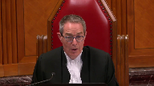
Thank you.
Speaker 5 (00:45:06): Certainly, with respect, Justice Cullar held that the Justice Cullar fails to recognize that legislation can similarly have both charter infringing effects and charter infringing aims.
In respect of this particular instance, Section 33.1 is holding automatons accountable as an unconstitutional effect.
Also, doesn’t enclose it being, foreclose it being an unconstitutional aim.
My respectful submission is both the aim and the effect of the legislation is unconstitutional and isn’t circular in that regard.
So my respectful submission is Justice Picacho’s reasoning on that point should be preferred.
Justice Brown (00:45:59): I’m trying to understand how an aim can be unconstitutional.
I mean, we strike down provisions of legislation, we strike down laws under section 52, we don’t strike down aims.
Speaker 5 (00:46:12): Well, this goes back to the idea of accountability being the aim of the legislation.
If this court accepts that’s the purpose, then that’s the purpose of all offences under the Criminal Code.
And my respectful submission is, this is premised on the idea that while there is a protective purpose inherent in the preamble, my respectful submission is for a number of reasons that protective purpose is not borne out in what the actual section does.
So my respectful submission is the aim of accountability is unconstitutional and can be an unconstitutional aim in that regard.
And that’s, again, I apologize, that’s because my respectful submission is the protective purpose is not is not borne out in this section.
And to that extent, I disagree with my friend on that point.
Justice Wagner (00:47:19): Thank you very much, Ms. Deborah Alford.
Speaker 6 (00:47:30): Good morning Chief Justice and Justices.
In an effort not to repeat too much what was said in the related case of Regina and Sullivan and Chen that this court heard approximately one month ago, we will make the following submissions.
Firstly, the court below in our respectful submission did not err in finding that Section 33.1 was not constitutional, or was constitutional.
My apologies.
In our submission, the section does not breach Section 7 or 11D of the Charter.
However, if this court finds otherwise, then in our respectful submission, the section can be upheld under Section 1 as a reasonable limit demonstrably justified in a free and democratic society.
The respondent will make three points on the interpretation of the elements of Section 33.1.
Because the description of the elements and the way in which they interact one with the other anchors our constitutional arguments and with respect anchors the constitutional finding of the court below, of Justices Slatter and Hughes.
We will discuss that moral blameworthiness of this behaviour is a sound idea and it is caught by this section.
We will focus on what the phrase self-induced intoxication has been juridically held to include.
Namely, a voluntariness component as well as a mens rea component.
That one has to objectively foresee a risk of intoxication.
And thirdly, the standard of care as described by Justice Slatter in the court below, as the mens rea selected by Parliament, is the marked departure from acceptable standards of conduct when an accused voluntarily engages an objectively foreseeable risk of harm.
Entering into a danger zone, if you will, a zone of danger, a zone of harm to others.
And finally, if time permits, we will discuss the elements of Section 1 of the Charter.
And as this court is well aware, there is a significant divide between the Ontario Court of Appeal in Sullivan and Chan and the Alberta Court of Appeal in this case as to what the objectives of this legislation are.
We respectfully submit that the unanimous decision of the Alberta Court of Appeal in that regard be preferred to the approach provided in Sullivan and Chan by the Ontario Court of Appeal.
The issue of moral blameworthiness has underpinned various scholarly articles and of course the case law in this area for decades, it seems, and it is still a central concern we respectfully submit.
During the various consultations and the evidence that Parliament heard while Bill C-72, which created Section 33.1, were underway, various opinions as to moral blameworthiness behaviour were expressed.
And I would like to focus in on one observation that was made in April of 1995 by the law professor Patrick Healy.
He had written a number of academic articles on this area and in fact had been referenced by this court in Davio.
And he continued to write during the consultation and after Section 33.1 was passed.
But during the hearings he had this to say and he opined that the bill was constitutional because he said that Parliament has been presented with a proposal that says that people who commit harmful acts, acts of personal violence while they are in a voluntary state of severe intoxication are not morally innocent.
Because harmful wrongdoing done in that state nevertheless shows a wrongful or morally guilty form of behaviour.
He went on to say that the bill indicates that people who commit harmful acts in that voluntary state of intoxication are nevertheless guilty or wrongful in what they do precisely because they have induced that state of incapacity and irresponsibility.
And so that’s why you say Section 33.1.
Justice Brown (00:53:17): Right.
And so that’s what you say Section 33.1 does.
Overlapping speakers (00:53:24): That’s what you say second.
Justice Brown (00:53:25): Section 33.1 does.
Speaker 6 (00:53:29): that it, that it, uh,
Justice Brown (00:53:33): What you just said, that the gravamen of the moral failure here, or in the language of the section, the gravamen of the marked departure from the standard of care is the self-induced intoxication, right?
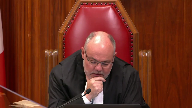
Overlapping speakers (00:53:54): Yes, that is what we say.
Let’s not kid ourselves, you watched the last hearing.
You saw my questioning.
Justice Brown (00:54:00): You heard my questioning of Council, so I’m not going to read sub 2 again. No.
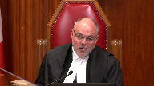
But you know my concern that when you read it, it makes plain that the marked departure from the standard of care arises where the person, while in that state of self-induced intoxication, interferes or threatens to interfere with the bodily integrity of another person.
In other words, the gravamen of the marked departure is the interference on a plain reading of the statute.
Now I’ve, you know, we’ve been urged variously to read things in, to don’t read things in but to squint when we read it.
I know you’re urging us in your factum to read it holistically.
We’ve been urged to focus less on the text and more on the preamble.
And I’m wondering why we just can’t read the statute and understand the gravamen of the marked departure being precisely what it says.
Speaker 6 (00:55:20): Well and in fact Justice Brown I respectfully submit that you can when you do take all of the various sections one two and three of section 33.1
and I would like to point out the uh subsection one and the last phrase in that particular section uh there’s the the section speaks of course of self-induced intoxication which of course has has a certain definition in and of itself that you must be voluntarily you must voluntarily take an intoxicant that you know or could know has an intoxicating effect then the section actually says in the last phrase where the accused departed markedly from the standard of care as described in subsection two with respect we say that that particular phrase qualifies of course the act of self-induced intoxication it makes direct reference to the description in subparagraph two and that as that uh as Justice Slatter said in the Brown decision it it can be and it is assessed at the time of intoxication and then of course as one progresses uh the the intoxication may or may not manifest itself in an act of violence and of course in this case we do have it manifesting itself in an act of violence so with respect it is our submission um based on our comments in our factum and of course the hearing of Sullivan and Chan and all of the other various writings that have been done on this subject from the Attorney General’s that uh that is the gravamen uh because otherwise it wouldn’t make much sense.
Justice Kasirer (00:57:30): Maybe you’ll explain it better to me.
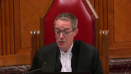
But when I read your factum, I’m not sure if you’re arguing that 33.1 creates a predicate offense that there’s an underlying unlawful act of extreme intoxication and the harm that results is what is the source of…
When that all comes together, that’s the source of liability.
Or is it a penal negligence of offense or foreseeability of harm or maybe even foreseeability of the violent act itself is somehow taken into account?
Which one is it of those two?
It is the latter.
So if it’s the latter, it’s foreseeability of what?
Is it harm writ large?
Do you make no distinction between the types of harm that it might be?
And what about the fact that the offense itself, the person’s on the hook for an offense, doesn’t seem to be within the range of what’s objectively foreseeable?
Speaker 6 (00:58:45): Well, if one gets into this state that we’re talking about, this state of extreme self-intoxication, of course, we must remember that the actual extent of that state does not have to be foreseen.
And how could somebody foresee that it would be legally defined as automatism, for example?
So, the degree of intoxication required is not just, if I can use the phrase, intoxication simpliciter.
It’s not the mild form of intoxication.
That is stage one in the daily case.
It’s not stage two of the daily case.
It’s stage three of the daily case and beyond.
And that by someone, such as Mr. Brown, conducting himself in the fashion in which he did, can get into that state that it is reasonably foreseeable that that is a zone of danger, that that is a zone of harm that the section says is criminal.
Justice Brown (01:00:04): So what do we do then with Justice Lebel’s reasons for the court in Bouchard, Le Brun, where he addressed foreseeability and said no distinction based on the seriousness of the effects of self-induced intoxication is drawn in this provision.
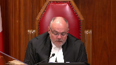
Speaker 6 (01:00:29): Well, with respect, Justice Brown, of course, the provisions of Bouchard-LeBrun, those three paragraphs from which that that phrase comes from, was more or less the extent of the interpretation in that case.
And the degrees of intoxication we submit must be overlaid on the overall analysis.
Overlapping speakers (01:00:58): I don’t understand what that means.
Speaker 6 (01:01:00): What I’m attempting to say is that the degree does matter because this section does not
Justice Brown (01:01:10): Well, maybe it does, but my question is, what do we do with Bouchard-Lébrun?
Let’s say that I agree with you.
What do I do?
Speaker 6 (01:01:18): I think you can expand upon that.
You can take Justice Labelle’s three main paragraphs in addition to his comment I believe at section 35, paragraph 35, that Daviau was not rewritten, that section 33.1 was not simply a codification of the dissent in the Daviau decision.
You can take all of those paragraphs that are in the Bouchard-LeBrun decision and expand upon.
Justice Brown (01:01:53): He said 33.1 applies where the accused is intoxicated, where the intoxication was self-induced, and where the accused departed from the standard of reasonable care to be expected, not by the way to become self-intoxicated, but by interfering or threatening to interfere with the bodily integrity of another person.
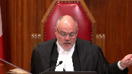
And then he goes on to say no distinction based on the seriousness of the effects is drawn in these provisions.
How do I expand on that to say precisely the opposite?
Speaker 6 (01:02:25): Well, you go to what he said in paragraph two, which is the self-induced intoxication point, and recognize that in using that term, that phrase, self-induced intoxication, that that is a well-known, a well-developed phrase in our law.
And it goes back to 1962 in this court’s decision in King, where the court said the voluntary consumption of alcohol or drug which the accused knew or had reasonable grounds for believing might cause him to be impaired.
And then there’s been various iterations of that through, for example, the Vickberg case, which
Justice Brown (01:03:20): But that’s just that’s just foreseeability, first of all, he doesn’t incorporate that in section 33.1, but that’s just foreseeability of intoxication.
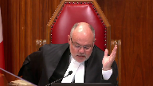
There’s no suggestion here that that those cases are talking about the foreseeability of automatism.
And in the end he doesn’t distinguish between the effects anyways.
You’ve got limited time, but I just want to signal to you that I’m not convinced so far.
Speaker 6 (01:03:49): Certainly, and just just to finish that particular area off, of course, Justice Brown, there was much discussion about this at the Sullivan and Chan hearing.
And, of course, it may be presumptuous of me to expect, but I expect that this Court will be rendering a decision in in Sullivan and Chan and in Brown.
at the same time.
So we, of course, adopt what was said in that particular case in our submissions to you today as well.
Justice Martin (01:04:29): May I bring you back to one of the differences, though, between the case that’s in front of us today?
And that is we have the same or singular act of self-induced intoxication of Mr. Brown, both drinking and taking mushrooms.
And when you’re speaking about moral innocence, as I would understand it, if Section 33 sub 1 is constitutional, and we look at Justice Holland’s decision, she found, based on expert evidence of Dr. Dalby and Yarama, that there was, in fact, involuntariness here, that he was intoxicated to the point of automatism.
So he would not be convicted of the property-based offences of breaking and entering, and he would be convicted of the aggravated assault.
And that is a stark kind of conclusion in terms of the effects of Section 33-1, because really it’s the same act of self-induced intoxication.
How can it be morally innocent in one context for one set of offences, and morally culpable because there’s a bodily integrity aspect of the other offences?
Doesn’t that cut against some of what you’re claiming?
Speaker 6 (01:05:55): Well, with respect, Justice Martin, I would suggest no, because Parliament did make that distinction.
They found that in Section 33.1, the restriction, of course, to general intent crimes that involve the bodily integrity of others.
And if so, again, I would just like to make a brief point as well on the break and enter aspect of this case.
In this particular case, the Court of Appeals decision reflects that the conviction is for aggravated assault.
However, the formal judgment in this case is for break and enter and commit aggravated assault, because the break and enter and commit carries with it the intent of the underlying offense.
And so we, in our formal judgment that is before you, the conviction is actually for break and enter and commit aggravated assault, with the break and enter and commit having a general intent component, which rather than the specific intent component for break and enter and with intent to commit.
But back to this concept of moral blameworthiness, I mean, it just, in our respectful submission, in someone such as Mr. Brown, he attends this house, as my learned friend Mr. Fagan has said, that this is in the evidence, of course, he’s at this party, there’s other people, he’s at this party, there’s other people, and they proceed to drink, in his estimation, I believe it was about 14 ounces, 12 to 14 ounces of alcohol, and then this baggie of magic mushrooms that happened to be on the kitchen counter, and there’s no evidence as to what quantity he took.
He says that he just began snacking on it indiscriminately throughout the evening, and with respect, we suggest that the imbibing of not only of an illegal substance, a substance that is controlled under the Controlled Drugs and Substances Act, adds an element to the moral blameworthiness of his particular behavior on the night in question, and to continue doing so in this environment, we suggest, is exactly what Section 33.1 was intended by Parliament to avoid.
And with respect, we suggest that Mr. Fagan’s comments about Mr. Brown not having the objective foreseeability, if that is held to be the test, it just is not, is not carried out by the evidence, it’s not shown in the evidentiary record.
He knew this was an illegal substance, he testified in cross-examination that he had a substance that was illegal, he testified in cross-examination that he knew it was a hallucinogenic, he didn’t know how much he took of it.
Perhaps a reasonable, safe way of doing this would be at a safe injection site, or perhaps a better example is if the drug is being administered by a professional who is microdosing the person, perhaps then the moral blameworthiness that we suggest is there would not apply, because safeguards are being taken.
And just to add to the facts, a scenario here, what if, what if Mr. Brown was in his house with his intimate partner, did this, and ended up hurting or killing his intimate partner?
The place in which it happens can turn from a safe place into a place of profound agony by either an assault or a death, and that of course we saw in the, in the Chen facts.
So for all of those reasons, that is why we maintain that this is morally blameworthy behavior to get yourself into a course of conduct that can lead you to become a weapon with your own body.
Briefly, if, can I, can I ask, excuse me, I’m sorry.
Justice Kasirer (01:11:18): interrupt you.
Justice Slatter speaks of a dangerous drug as opposed to some other intoxicant.
Is he right on that?
Speaker 6 (01:11:30): Well, of course, Mr. Justice, if you look at the various schedules that are attached to the Controlled Drugs and Substances Act, there are hundreds, if not thousands of different drugs out there with various components or, I mean, and they’re all controlled, those are all regulated.
But we suggest that if someone is embarking upon a course of conduct with alcohol and prescription drugs, for example, the combination of the two, that that can create the type of danger that this section is intended to foreclose upon.
So, of course, each case is fact-specific, each drug is fact-specific, and in the trials that would be undertaken, I would suggest that the court would need to be aware of some of the elements of each of the drugs, and of course, thus the requirement for expert evidence to be done.
So, it’s not simply the label of the drug as an illegal drug or a dangerous drug that is the defining feature here, Mr. Justice, in our respectful submission.
It can be the combination or the misuse, you know, the reckless disregard for what, perhaps, one’s prescription pamphlet has to say, as an example.
The ingestion of significant of significant quantities of alcohol along with prescription drugs in violation of what the doctor’s orders are or the pharmacist’s orders are.
On the Section 1 analysis, we would respectfully submit that protection and accountability are both the pressing and substantial objectives of this legislation, that that is the way in which the equality rights of everyone are balanced, that women and children are equal, and that it is balanced that women and children who are historically victims of self-induced intoxicant violence by perpetrators are protected, and there must be an accountability aspect to this.
In reference to the proof, we suggest that it is difficult to prove a negative, a deterrence.
How does one actually statistically prove that?
So, with respect, we suggest that we, in the justification stage, do not need to prove to a on actual evidence, a negative, a deterrence effect.
We suggest that by criminalizing this behavior, that there is a deterrent effect, that people will be careful, that people will know when to stop.
I see that my time is drawing near and subject to any further questions.
Those are our respectful submissions.
Thank you very much.
Thank you.
Justice Wagner (01:15:17): The court will take its morning break, 15 minutes.
Justice Rowe (01:15:58): The court.
Justice Wagner (01:16:21): Let’s see if that’s what Mr. Morris
Speaker 7 (01:16:29): Yes, thank you Chief Justice and Justices.
Good morning.
Canada intervenes in this appeal, as it did in Sullivan-Chan, to address the charter issues raised in respect of the constitutional validity of Section 33.1.
We addressed Section 1 in both our Factors, but subject to your questions, I’ll leave those submissions with you and restrict myself today to the interpretive issues related to the scope of Section 33.1.
And at the risk of reliving Groundhog Day, I’ll try not to repeat what I said in the Sullivan-Chan matter.
The appellant argues here that Section 33.1 eliminates the need for voluntariness or mens rea and captures within its scope the consumption of any substances that may result in intoxication.
That interpretation in our submission is simply wrong.
It’s our submission that the provision must be read instead as being restricted to self-induced intoxication where it is foreseeable at the time of intoxication that automatism could result and only where violence actually ensues.
And an accused must be found who violated the marked departure standard of conduct.
This interpretation gives meaning to the entirety of the section, is consistent with the common law that was known to Parliament when it was passed, and conforms to this Court’s interpretation and analogous provisions.
I’ll focus today on why the narrow textual interpretation offered by the appellant and also accepted by the majority in Sullivan-Chan must be rejected, as it correctly was by the Court below.
First, it’s illogical.
The appellant’s narrow textual interpretation requires to ignore the use of the term marked departure and is thereby criminally at fault to accept that Parliament acted in defiance of well-accepted principles of the common law by applying a standard of conduct to non-rational actions that can’t be found blameworthy.
Second, it requires you to ignore a consistent decades-long practice of this Court exercising the additional function of giving further provision to the elements of actus reus, and in particular mens rea, within the text of criminal provisions.
There is no reason to abandon that role in this one singular context and ample common law guidance on how these elements should be interpreted here.
Turning to my first submission, 33.1 must be read in a way that gives meaning to all the terms in the provisions, including the phrase, and is thereby criminally at fault, which refers back to a marked departure from the reasonable standard of care.
These terms only have meaning if applied to the actions of a rational actor.
They are meaningless if applied directly to a non-rational actor committing an act of violence in a state of automatism.
Something can’t be negligent and involuntary at the same time, and Parliament’s law should not be interpreted to produce criminal fault in the absence of voluntary actions by a rational actor.
The primary and long-standing presumption of the criminal law is that its purpose is only to capture blameworthy behaviour of rational actors.
Justice Castro made that point way back in 1962 in the King case, when he said that criminal law is in relation, in the context of impaired driving, that it should not be lightly presumed that Parliament was either ignorant of the proposition that for the criminal law to punish, there must be a willpower to do an act.
It can’t be lightly presumed Parliament was ignorant of that fundamental proposition or chose to disregard it entirely.
Parliament was aware when Section 33 was enacted that a marked departure concept ensures that only voluntary actions done by a person with capacity to comply with the law that fell well outside of expected societal norms are captured.
Now, intoxicated violence has always posed unique problems for Parliament and courts, as it has a dual exculpatory and blameworthy aspect, but the common law has provided ample guidance to navigate this dilemma through jurisprudence interpreting the term self-induced to exclude liability in the case of voluntary intoxication.
And contrary to the appellant’s submission, a finding of marked departure does not require a scientific finding on the exact factual causations associated with various intoxicants.
That conflates the actus reius question of whether the consumption of a particular intoxicant in a particular case actually caused a loss of awareness or capacity, with the mens rea question of whether an accused in a particular circumstance significantly departed from the expected behaviour of a reasonable person in regard to the taking of a mind-altering drug.
Now, a determination of an objective foreseeability and a marked departure will depend on the circumstances and facts in any given case.
Some cases will be easy to determine.
An individual knowingly takes crystal meth or PCP or some street drug they weren’t aware of, or took a dangerous combination of mind-altering drugs for recreational purposes.
Or on the other side, a person who has completely unforeseeable reaction to a prescribed medicine or takes a single glass of wine.
Those will be the easy cases in respect of assessing a marked departure.
And some cases will be harder.
Some will turn on the evidence and individual circumstances that cannot be precisely defined in advance and are always properly left to the trier of fact.
Now, contrary to appellant submissions, not every circumstance involving the ingestion of intoxicant a behaviour Canadians engage in social settings every day are captured by section 33.1.
A marked departure can only be found where a reasonable person in all the circumstances assessed by a trier of fact would know or ought to know that the ingestion would create a realistic risk of being rendered an automaton.
Justice Brown (01:22:02): the is that the basis on which the Attorney General of Canada’s conducted prosecutions in this area as it in other words it has has have as the Attorney General urged courts that they may not convict unless a foreseeability standard as you’ve just described was met on the evidence
Speaker 7 (01:22:24): Justice Brown, that’s a good question, although I’m going to dodge it somewhat in the sense that the Attorney General candidate isn’t often the one that carries out prosecutions except in the North and other contexts.
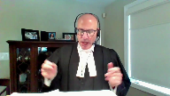
But nevertheless, to answer that question, I can’t speak in the past to exactly how the provision was interpreted.
We know it got a particular interpretation by this court in Bouchard-Leblun, and obviously this particular question that’s before you with respect to the propulsive issue of how we interpret this, consistent with the Charter, in light of all the objectives, I think, is something that’s only becoming, coming before this court now.
So to the extent that there may have been prosecutions, I’m not denying there may have been past instances where a different interpretation of Section 33.1 was taken and prosecuted upon.
I’m not here to say that at all, that may well have taken place.
What I’m saying is properly interpreted now, seized with the matter in respect of how it’s currently been framed here and in Sullivan-Chan, this is the correct propulsive interpretation, which we’re suggesting this court should adopt in this case.
But again, I can’t speak to the possibility that there may have been a prosecution based on a different theory of the case.
Turning to my second submission, there’s no reason for this court to abandon its decade-long judicial function of purposefully interpreting criminal provisions in a manner that gives meaning to both actus reus and mens rea elements.
And I give multiple examples of this in our factum, I’ll leave them to you.
They’re generally set out between paragraphs 9 and 11, fraud, care and control of a motor vehicle while impaired, failure to comply with recognizance that had no mens rea defined within the section at all, dangerous driving, et cetera.
But I want to turn to one that’s particularly instructive here, which is impaired driving.
Given the similarities in structure to Subsection 2.
When this court considered that offence in King of Penno, that provision read, everyone who while his ability to drive a motor vehicle is impaired by alcohol or drug, drives a motor vehicle or has a care control of a motor vehicle, whether it is in motion or not, is guilty.
Now, the text of the provision did not explicitly attach any mental fault to a decision to voluntarily become intoxicated, yet despite this, the court, way back in 1962 in King, interpreted as requiring that the impaired condition which the section prohibits be brought about by some conscious act of the will or intention.
This was so notwithstanding the fact that the text of the subordinate clause while his ability to drive is impaired, if given a purely literal reading, which is what the appellant’s urging here, would have been fulfilled in the absence of a decision to voluntary intoxicate, that wasn’t referenced within the text at all.
That’s why I submit what we’re suggesting to this court, it’s not a reading in any radical fashion at all, it’s to interpret within the basic presumptions of the criminal law, with existing common law principles at your disposal, what those terms mean, to give it meaning in a way that actually is consistent with the legislative objectives are here.
Justice Kasirer (01:25:27): Mr. Morris, in respect of that comparison, what about the fact that the gravamen of the offence under 33-1 is the violent act itself and not getting behind the wheel of a car when you’re impaired?
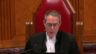
Speaker 7 (01:25:46): Why would submit that, Justice Casir, with respect to that question, the gravamen of the offense here is the intoxication leading to the creation of the state of automatism.
It’s the state of automatism that is the danger that this provision seeks to address.
It’s, as Justice Moldaver said in the Sullivan Chan hearing, it’s putting, it’s arming someone with a loaded gun in public.
That’s the danger.
So the liability, the mode of liability was altered here to change the gravamen of the offense to the creation of the state of automatism.
That’s what has to be objectively foreseeable to create the danger that there might be an act of violence that would happen.
But the actual foreseeability doesn’t have to extend from the individual’s perspective to an act of violence.
There’s an intervening act, which is automatism, which prevents that direct connection here.
And again, we go back to the unique nature of intoxicated violence and having that blameworthy aspect as well as the exculpatory act.
Overlapping speakers (01:26:52): Well, I’ll have to think about whether I have…
Speaker 7 (01:26:54): got at the problem here by using the 33.1 to change the gravamen to the intoxication leading to the creation of the danger.
Justice Kasirer (01:27:04): I’ll have to think about whether that’s indeed the offence that we have before us in 33.1, but it does sound to me like you’re not taking the same position as the Crown in this position as to, in this respect, as to the nature of the offence, whether it’s a predicate offence, the underlying unlawful act of extreme intoxication and the harm resulting is just something that follows.
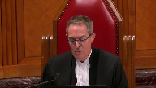
We heard earlier that your colleague takes the view that it’s a penal negligence offence.
Speaker 7 (01:27:42): So, I don’t know that there’s any great difference in that respect.
It is a penal negligence offence, but there has to be an objective foreseeability, which we say is the risk of automatism, that the person know or ought to have known the substance was an intoxicant, ought to have known the consumption of that would create a realistic risk of automatism, and the accused must have departed markedly from the standard of care that a reasonable person in the circumstances would have taken to avoid that risk.
So under our interpretation of this provision, the commission of the violence at the end is the consequence that happens as a result of the gravenin of the fault, which is the decision to take an intoxicant, which had the realistic risk of creating a state of automatism, leading ultimately to the violence.
So yes, Parliament was concerned with the ultimate violence, of course.
That’s the underlying objective.
But in order to get to it in the case of automatistic violence, self-induced automatistic violence, it had to move the gravenin to the decision to intoxicate in the first place, and then the commission of the violence itself then becomes a consequence of that.
It doesn’t have to be foreseeable, per se.
Under our interpretation, that doesn’t make sense, because there’s an intervening event of the automatism itself.
Thank you very much.
I’m sorry to interrupt.
In order to get it…
I’m sorry to interrupt.
Your time is up.
Thank you very much. Okay.
Justice Wagner (01:29:03): Thank you very much.
Speaker 8 (01:29:09): Good afternoon Chief Justice, Justices.
I’d just like to respond to a few questions that have arisen in this hearing and in the Sullivan hearing.
First to Justice Casir’s point or question to my friend just a moment ago about what the mode of liability is here.
In our submission this is a predicate act offence where the predicate act is one of penal negligence and in Crichton the court explained at page 59 that an offence can be predicated on the predicate act of penal negligence.
Second, Justice Casir, you asked about whether the marked departure standard attaches to some danger at large.
What does it need to attach to?
And in my submission the clearest answer to this question comes from this court’s decision in Neglic.
You can look at pages 143 to 144.
The marked departure standard attaches not to harm writ large but to a specific harm identified in the actus reus.
So in this regard we agree with the Empowerment Council that you have to look to the text of the provision.
Section 33.12 provides for fault in relation to self-induced intoxication that renders the person unaware of.
Whoa whoa whoa whoa whoa whoa whoa whoa whoa whoa whoa whoa whoa whoa whoa whoa whoa whoa whoa whoa whoa whoa whoa whoa whoa whoa whoa whoa whoa whoa whoa whoa whoa whoa whoa whoa whoa whoa whoa whoa whoa whoa whoa whoa whoa whoa whoa whoa whoa whoa whoa whoa whoa whoa whoa whoa whoa whoa whoa whoa whoa whoa whoa whoa whoa whoa whoa whoa whoa whoa whoa whoa whoa whoa whoa whoa whoa whoa whoa whoa whoa whoa whoa whoa whoa whoa whoa whoa whoa whoa whoa whoa whoa whoa whoa whoa whoa whoa whoa whoa whoa whoa whoa whoa whoa whoa whoa whoa whoa whoa whoa whoa whoa whoa whoa whoa whoa whoa whoa whoa whoa whoa whoa whoa whoa whoa whoa whoa whoa whoa whoa whoa whoa whoa whoa whoa whoa whoa whoa whoa whoa whoa whoa whoa whoa whoa whoa whoa whoa whoa whoa whoa whoa whoa whoa whoa whoa whoa whoa whoa whoa whoa whoa whoa whoa whoa whoa whoa whoa whoa whoa whoa whoa whoa whoa whoa whoa whoa whoa whoa whoa whoa whoa whoa whoa whoa whoa whoa whoa whoa whoa whoa whoa whoa whoa whoa whoa whoa whoa whoa whoa whoa whoa whoa whoa whoa whoa whoa whoa whoa whoa whoa whoa
Justice Brown (01:30:30): Whoa, whoa, whoa, you said your submission is that the fault is in respect of self-induced intoxication?
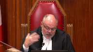
That’s correct.
Well, let’s read it.
Let’s read it together.
For the purposes of this section, a person departs markedly from the standard of reasonable care generally recognized in Canadian society and is thereby criminally at fault where the person, while in a state of self-induced intoxication that renders them incapable of controlling their behaviour, voluntarily or involuntarily threatens to interfere with the bodily integrity.
So the fault arises while the person is already intoxicated, self-induced.
But that’s, right, the self-inducement precedes fault, which coincides with the interference with bodily integrity of another person.
We disagree with that interpretation.
That’s not an interpretation.
I’m reading it.
Speaker 8 (01:31:24): it?
Well, in my submission, the fault crystallizes at the point that the violence…
Overlapping speakers (01:31:31): And so what do you point to in the text to support that?
Speaker 8 (01:31:35): Well, in your interpretation, Justice Brown, or your reading of the provision, self-induced intoxication is a precondition.
Justice Brown (01:31:43): Well, hang on.
It’s not a matter of my reading it.
I read it.
And it says, where the person, while in a state of self-induced intoxication…
Sorry, is there something that I should be reading into the word while that temporally removes it from my apparently impoverished understanding of this English language word.
Speaker 8 (01:32:05): I’m not suggesting that.
I am suggesting that this is a precondition to criminal fault under Section 33.12.
It’s something that is an essential precondition.
You can’t have liability.
Overlapping speakers (01:32:21): And where in the text do you rely on for that?
Speaker 8 (01:32:24): That the words exist in the Actus Reus articulated in section 33.12.
You can’t have, you can’t just read out the phrase off some of the comments.
Justice Brown (01:32:37): in their proper.
Overlapping speakers (01:32:37): your order.
Justice Brown (01:32:38): I think, but you tell me how I’ve how I’ve improperly mixed up the order with reference to the text of the section Let me give you my best response to this question. Okay.
No, no, no, no, no, no, no, no, no, no, no, no, no, no, no, no, no, no, no, no, no, no, no, no, no, no, no, no, no, no, no, no, no, no, no, no, no, no, no, no, no, no, no, no, no, no, no, no, no, no, no, no, no, no, no, no, no, no, no, no, no, no, no, no, no, no, no, no, no, no, no, no, no, no, no, no, no, no, no, no, no, no, no, no, no, no, no, no, no, no, no, no, no, no, no, no, no, no, no, no, no, no, no, no, no,
Speaker 8 (01:32:49): The first is that the text of the provision is obviously important but a propulsive interpretation is essential.
Legal terms must be given their legal meaning.
Justice Rowe (01:32:59): to stop you there Ben you can you can reply to me as well as to Justice Brown statutes are not to be read as a sort of gestalt a sort of an overall impression of everything that you see in front of you and from the gestalt of reading this I arrive at some meaning I mean that’s nonsense that’s just making it up as you go along and inviting the court to put interpretations that are not supported by the text it’s a fair question put by my colleague upon what portion of the text you rely for your interpretation and what I’m hearing in response is don’t look at the text in its particulars just give it a meaning when you read it overall and and that’s just an invitation to loose thinking
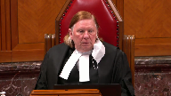
Speaker 8 (01:33:54): Well, Justice Roe, in my submission, the fact that the text includes those terms, a requirement of self-induced intoxication that renders the person unaware of, etc., that is language which is capable of bearing a mental element.
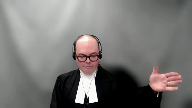
No other element of the offense under the form of liability in 33.12 is capable of bearing a construction in which a marked departure standard would attach.
There is a general rule that every element of the offense is presumptively interpreted to have a mental element unless there’s clear contrary intent.
And the fact that the phrase is offset by commas and starts with the word, while in my submission, can’t be read as evincing a clear unequivocal parliamentary intent to have no mental element attached to that element.
And in addition, you have the preamble of the provision which speaks to fault based on self-induced intoxication.
In addition, you have Bouchard Lebrun, which interpreted the provision as having two separate elements, one being the intoxicated state and two being the fact that the intoxicated state was self-induced.
So in my submission, that’s what Bouchard Lebrun- Don’t forget the third.
Justice Brown (01:35:11): don’t forget the third that the accused departed from the standard of reasonable care to be expected by interfering or threatening to interfere with the bodily integrity of another person, not by becoming intoxicated.
Speaker 8 (01:35:26): So, Justice Brown, I don’t disagree with what Bouchard-Lebrun says.
I’ll just indicate that in Bouchard-Lebrun, the issue was section 16 of the Criminal Code.
To my knowledge, section 33.1 wasn’t even the subject of written argument in this court.
Overlapping speakers (01:35:44): so we should ignore it.
Speaker 8 (01:35:45): But if this element is capable of bearing a mental element, if this element of self-inducement is capable of bearing a mental element, in my submission, the provision is one of objective fault given the clear indications in the text of the provision.
Thank you for your attention, and I look forward to seeing you at the next session of the talk.
Overlapping speakers (01:36:01): And if you accept that the mental element is objective…
Sorry, where are these clear indications again?
Speaker 8 (01:36:06): Objective fault.
Overlapping speakers (01:36:08): Yeah.
Speaker 8 (01:36:08): Uh, the words departs markedly from the standard of reasonable care or in the preamble um talking about a standard of reasonable care section 33.1 sub one and and we don’t
Justice Brown (01:36:19): I don’t care that subsection 2 links that departure to the interference, or threat to interfere with bodily integrity, but of course that’s just my reading.
Speaker 8 (01:36:29): I would submit, Justice Brown, that there are really three questions in the statutory interpretation flowing from this court’s jurisprudence.
The first is whether the act of self-induced intoxication has any mental element whatsoever.
And there’s a strong presumption that criminal provisions have some fault requirement.
The second question is
Overlapping speakers (01:36:59): Isn’t Sub One designed to rebut that presumption?
Speaker 8 (01:37:04): No, in my submission, Sub 1 is designed to indicate that the Daviau defence does not operate when the mode of fault proven in Subsection 2 is proven beyond a reasonable doubt.
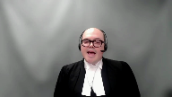
That’s my reading of the provision.
But this Court has long held that if a provision has an objective fault requirement, that the objective standard that applies is the marked departure standard.
That standard cannot logically attach to the act of violence, because as Mr. Morris indicated, at the time of the act of violence, the person is effectively an automaton.
So that person cannot foresee the consequences of their action.
It’s illogical and imputes to Parliament a lack of understanding of the operation of the marked departure standard to say that the act of violence is what must be proven on a marked departure standard.
In my submission, the only element in the text of the provision capable of actually bearing a marked departure as that legal term has been understood and defined by this Court is the act of self-induced intoxication.
And I just want to reiterate, if you do accept that there is a mental element in 33.12, and if you do accept that the mental element is objective, it must be read as a marked departure, and I’d rely on Finley for that point.
Justice Brown, you had asked a question about the passage in Bouchard-Lebrun about no threshold of intoxication, et cetera.
I’ve responded to that question from Justice Cote in the Sullivan hearing, and I just refer you to my response on that point.
And I see I’m just running out of time.
If I may just
Overlapping speakers (01:39:05): Wait, yeah, go ahead, 30 seconds.
Speaker 8 (01:39:07): Thank you, thank you sir.
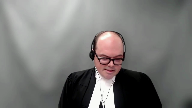
So I’d just like to finally indicate that there’s been some suggestion in particularly in the Court of Appeal for Ontario that section 33.1 is unconstitutional because it involves substitution.
I’d just like to indicate that the principle against substitution has never to our knowledge been used by this court to prevent Parliament from defining new ways of committing offences and if you look at footnote 36 of our factum in this case you’ll see several examples involving a provision that expressly or implicitly deems an essential element to be proven by some other fact.
Section 33.1 doesn’t say that self-induced intoxication proves intent to commit a general intent offence.
It assumes that you did not intend to commit the offence and says that articulates a different mode of liability.
Davio and my submission should not be read as creating any principle of fundamental justice that forecloses or precludes what Parliament has done here.
Justice Wagner (01:40:08): Thank you very much.
Thank you.
Amy Cutler.
Speaker 9 (01:40:15): Good afternoon.
I’m happy to discuss any aspect of our written submissions, but with the Court’s permission, I hope to focus in particular on the last argument in our factum.
Assuming that some kind of negligence-based response to the dangers posed by intoxicated violence is acceptable, does Section 1 require Parliament to create an offence of criminal intoxication, or is the general approach taken in Section 33.1
okay, whatever the Court makes of the particular wording of the section as written?
This is essentially the appellant’s position.
There’s nothing wrong with objective foreseeability per se as a basis for criminal liability, but allowing conviction for the substantive offence conflates the negligent act with the consequence, and that’s what creates a substitution problem and an 11d problem and so on, and I have a few points to make on that.
The first one is, Parliament wasn’t acting out of the blue.
It was following one of the options suggested by the Law Reform Commission, and you’ll recall that a minority of the commissioners said, we don’t love the idea of criminal intoxication.
What we instead think you should do is allow conviction for any offence, any substantive offence that can be committed by negligence, and treat intoxication as the negligent act that justifies liability for it.
And in fact, they went so far as to specifically say, in order to ensure conviction for some offences that might be missed, that might fall through the cracks, it will be necessary to add negligence as a possible level of culpability for those offences, and that’s exactly what Section 33.1 does.
It allows the offences covered by Section 33.1 sub 3 to be committed via negligence, and it treats extreme intoxication as the negligent act that justifies conviction where it meets the fault threshold of Section 33.1 sub 2.
Now, could Parliament add negligence to these offences?
Your decisions in Vine Corps and Martenot suggest that they add negligence to these offences.
Overlapping speakers (01:42:18): Yes.
Speaker 9 (01:42:19): very few offences require a specific level of fault as a constitutional matter.
Mostly, this is a decision that’s left to Parliament, and I’ll get to why in just a minute.
But I’ll just note, Parliament didn’t expand the offences covered by 33.13 to say that they could be committed by negligence in all circumstances.
They restricted it to the single situation contemplated by 33.12.
So surely, if they could make these offences broadly committable by negligence, surely they could do so in this narrow, circumscribed way.
Now, why does Parliament enjoy so much flexibility in terms of setting levels of culpability?
It’s because we’re confident that the system can accommodate gradations of fault and the blameworthiness of a particular accused.
This is why we don’t have a separate offence for intentional sexual assault, another one for reckless sexual assault, and another one for willfully blind sexual assault, because we trust that we can adjust and we can treat the accused appropriately in the circumstances of the particular case.
Justice Moldaver, this was your point during the Sullivan hearing.
We may not be used to seeing these offences prosecuted by way of negligence, but so what?
It doesn’t change the responsibilities of the participants involved.
An accused prosecuted for negligent commission of one of these offences will not be treated as if he or she had committed it intentionally.
There is no risk of disproportionate punishment.
Justice Kasirer (01:43:47): Mr. Cotler, is it the worry only the gradation of fault that you describe?
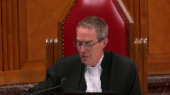
Let’s accept for the purposes of argument that penal negligence could work.
What about the problem about foreseeability of what?
And the foreseeability of harm, and in particular the harm as manifested in the violent offences.
I think in fairness to the appellant and to the majority in the Court of Appeal, this was a concern.
Speaker 9 (01:44:20): So you have our position on what the fault threshold set out by 33.1 sub 2 is.
We think it follows from the language of the provision and we I think probably agree with the Empowerment Council in relation to this.
You’re looking at, well the question is what are the risks Parliament thought reasonable people should turn their mind to before consuming an intoxicant.
We think the language of the section suggests that there are two elements, loss of awareness or self-control and interference or threat of interference with the bodily integrity of another person and that’s equally clear through the language of the section and the legislative history.
So you know this I guess raises Justice Moldaver’s question about well what does an accused have to do?
What does an accused have to foresee?
Well what does a hypothetical accused know right?
We know there are drugs out there that make you crazy and violent and we know that they show up hiding in other drugs and given the stakes we think you have to take some responsibility for what you’re putting in your body.
You know is this a known source or is it something you’re taking because you got it from some random person at a party?
Is it something that has a brand name or is it just some pill that you don’t even know what it is?
Is there a standardized dosage for this thing or are you just taking whatever is available?
Are you taking it alone or are you combining it with all sorts of other drugs and maybe alcohol?
Our position is depending on what those facts show in a particular case an accused who meets the fault threshold of section 33.12 is engaging in highly irresponsible behavior that regularly results in catastrophic consequences and so even if the moral blameworthiness is assessed accurately and there’s no risk of disproportionate attachment of moral blameworthiness we’re talking about somebody whose moral blameworthiness is very high and
Justice Kassir I’m sort of getting indirectly to answer your question.
When you see when you see this kind of conduct punished as a standalone offense right dangerous driving causing death or impaired driving causing death it can result in a life sentence because it carries a profound degree of moral blameworthiness.
Conversely increasingly we see self-induced intoxication reduced and restricted as a defense even if it may bear on an accused’s mental state at the time of the offense.
Perfect example of that section 273.2 sub a sub one.
If you get yourself so intoxicated that you can’t tell the difference between yes and no then that’s your responsibility and it’s not the complainant’s responsibility.
Can I ask you
Justice Brown (01:47:14): what if the accused did take steps to avoid harm
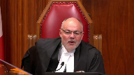
I mean if if I’ve squinted into this section hard enough to to to see the negligence standard that you urge us to accept that Parliament legislated if I squint further will I see a due diligence defense
Speaker 9 (01:47:38): Uh, well, I don’t think it’s a due diligence defence, but the burden remains on the Crown to show a marked departure from the standards of a reasonable member of the public.
So, we gave you one example in our factum, where an accused is addicted to crystal meth, knows the potential consequences of crystal meth, and so goes to a safe injection site on where he thinks he’s going to be monitored and kept separate from everybody else, so he’s not gonna hurt everybody.
Even if he does lose control of himself, uh, and can’t control what he’s doing, he still, uh, is taking steps to reduce the harm of danger to other people, and we think in that kind of a fact pattern, uh, a truer fact might well conclude that, uh, that accused had not departed markedly from the standard of conduct, um, expected from, uh, a reasonable member of the public, and so wouldn’t fall within the section, and so would still have the defence, uh, although in the language of the…
Justice Brown (01:48:37): section not to belabor it but on the language of the section I still departed markedly by interfering with the bodily integrity of another person
Speaker 9 (01:48:46): Oh, Dustus Brown, if we had another 10 minutes, I would love to go through the arguments in favour of, um…
Overlapping speakers (01:48:57): Well this is your second kick at the can, this was your big chance.
Speaker 9 (01:49:01): Um, maybe I can just sum it up in saying I can refer you to the first few pages of our factum which I can sum up in saying the evidence in this case as contained in the statute does not provide the clear and unequivocal intention that you need to find before you conclude that Parliament lost its mind after Davio and decided to start imposing criminal liability on people with no fault requirement and where they hadn’t done anything wrong.
I think that’s about as tightly as I can and concisely as I can put it
but I certainly appreciate the linguistic difficulties posed by the language of the section and that is something that you will need to overcome.
I just want to touch briefly on two final points.
The first is and Justice Casir again I’m returning to your question, I’m not saying that section 33.1 is perfect or that it doesn’t create tension with traditional criminal law principles I am arguing under section 1 but this is the point of the Law Reform Commission’s divided conclusion there are no perfect solutions.
In fact, criminal intoxication as a defence resolves some issues but brings a host of others such that the appellant today suggests that it’s probably unconstitutional on its own.
You don’t have to determine that, all you have to determine is that reasonable people could disagree as to whether it was the best response possible.
In other words, that you only have to reach the same conclusion as the members of the Law Reform Commission and Chief Justice can I ask you for just 30 seconds to conclude on my last point.
30 seconds, go ahead.
Thank you very much.
This isn’t new and this is the significance of your decision in Penno.
Yes, it says an element of an offence can’t also be a defence
but it says much more than that.
It recognises that where necessary you can impose liability where the substantive act is unintentional or even involuntary based on a previous decision to become intoxicated and Justice Le Maire and Justice Wilson and Justice Leroy Dubay said yes that does raise charter concerns but it is justified under Section 1 because of the need for public safety, accountability and confidence in the administration of justice which are exactly the same issues before you in this appeal
and so we say respectfully the same answer is called for.
Thank you very much.
Justice Wagner (01:51:27): Thank you.
Speaker 10 (01:51:33): Chief Justice, Justices, today I intend to address first whether competing rights should be addressed under Section 7 or Section 1 and then to address the issue of remedy.
So dealing first with where the balancing of competing rights should occur in this case.
The Attorney General of British Columbia submits that the balancing of rights here is more appropriate under Section 1 and that this case is different from Mills and Derrick.
In Mills of course the Section 8 rights of the complainant were directly engaged because the provision in question compels disclosure of private records where the test is met.
In Derrick that wasn’t the case but the privacy rights of the complainant were engaged because both Mills and Derrick and the two cases this court heard last month JJ and AS all address procedural rights under Section 7.
So while I agree with Mr. Kapoor ultimately that the balancing here should occur under Section 1, I don’t agree that there is no place in Section 7 for the balancing of rights because procedural rights are assessed there too.
But particularly those cases deal with the right to a fair trial which is not an absolute and is balanced by societal interests and more specifically the right to make full answer in defense which is not unlimited.
The scope of that right is delineated by balancing other rights or interests or values.
And in Mills Justices McLaughlin and Iacobucci explain that Section 1 is concerned with broader values which underlie a free and democratic society including respect for the inherent dignity of a person and a commitment to social justice and equality among other values.
In Malmo Levine this court held that to engage in a free-standing inquiry under Section 7 into whether a particular legislative measure strikes the right balance between individual and societal interests would entirely collapse the Section 1 analysis into Section 7.
Where competing rights and interests are relevant is in delineating the boundaries of the right in question and the underlying principle of fundamental justice.
In the case of the fundamental principles of justice said to be infringed by Section 33.1 the requirement that some or all the conduct charge be voluntary and the requirement for a minimum level of mens rea are clearly delineated and they cannot be limited by the competing rights of potential victims no matter how compelling those rights are.
However, those rights then must be considered under the Section 1 analysis and in AGBC submission the majority of the Ontario Court of Appeal essentially gave no voice to those rights by dismissing the purposes under Section 1 and not considering those rights under Section 7.
And in respect of that the AGBC prefers the Section 1 analysis of Justice Kalar particularly and in how the purposes of the legislation are articulated.
Turning to remedy, should this court find that the wording of the provision does not allow for the statutory interpretation urged by my colleagues and that there is a Section 7 infringement and that that infringement cannot be justified under Section 1 then this court must consider the issue of remedy.
And the Attorney General of British Columbia submits that this court can and should read in a penal negligence fault requirement which applies to self-induced intoxication.
Now in the factum we suggested some potential wording but I submit that it is also open to this court to simply read in that fault requirement without any modification to the section itself.
Fault elements and criminal offense provisions are often not explicit and this court has quite regularly determined and defined the nature of the fault element.
For example in Creighton unlawful act manslaughter which requires mens rea for the predicate offense and reasonable foreseeability of bodily harm.
In ADH the requirement for…
Justice Rowe (01:55:48): One of the problems or one of the consequences, maybe people see it as an advantage, I suppose you could, of reading in is it says there is a charter infringement here which is not justified but we’re going to fix it as opposed to giving it back to the relevant legislature, in this case parliament.
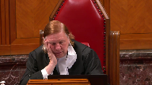
So some people who like to make laws would say this is great, you hit pay dirt here.
The other view is we should really be a little more modest in our role and say if there’s a problem here, here’s the problem parliament and the dialogue continues.
Speaker 10 (01:56:36): Justice Roe, I appreciate that perspective and and I understand this court’s caution in reading in and and taking on the role of legislator and what I say to that is that first of all, we’re 25 years into this dialogue and this is this court is now dealing with this provision and it’s it is a complex problem.
It is not an easy problem to solve.
That’s evident from the Law Reform Commission recommendations, the various provisions that Parliament considered and outside of the context of Canada, internationally it’s caused all kinds of different solutions, some of which are harsher than than our own provisions, some of which are not, some of which have enacted criminal intoxication provisions, but it’s a complex problem and if there is a remedy to this section that is constitutionally compliant and is cohesive with Parliament’s intent and objective, then there is no reason not to read in.
That’s essentially the shactor test.
It doesn’t complex.
Justice Brown (01:57:55): complexity doesn’t complexity though militate against our effectively reading in a solution?
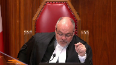
There may be other solutions.
Several solutions have been put to us, including the creation of a standalone offence on the impaired driving kind of model.
And I’ll put this to you as well because, you know, we can read in but there’s limits to reading in.
And the difficulty here and I’ll put it to you and you can respond to it.
The difficulty here is that the remedy of the only reason or significant reason we would be considering remedy here is the text of subsection two which as you’ve heard me go on and on about ad nauseum describes the marked departure as being the interference with the bodily integrity of another person while in a state of self-induced intoxication.
The language you propose changes that.
It actually does what other attorneys general have been urging us to read the section as doing.
It turns the self-induced intoxication itself into the marked departure.
But that’s actually changing legislation.
It’s saying the marked departure is something different than what parliament established it as, which you have to accept on my hypothesis because that’s the interpretation that gets us to the point where we’re talking about remedy, if that makes sense.
Speaker 10 (01:59:34): Yes, it does Justice Brown, it does make sense and I take your point and that is one suggestion
but I’m also suggesting to you that you can take the wording of the section as is and also apply a penal negligence standard to self-induced you can read in a penal negligence standard to self-induced intoxication so that there is a marked departure for both aspects but in my submission a marked departure where you interfere or threaten to interfere with the bodily integrity of another person that is when is that not going to be a marked departure from the standard of care of a reasonable person I mean there’s a certain I appreciate what you say about how the section reads
and I’m not quarreling with you about how it reads but on some fundamental level it doesn’t really make sense and it’s not the preamble
and I know I know my colleagues have taken you to the preamble
but now we’re talking about a remedy and we’re talking about parliament’s intent and we’re the preamble is a is a broader a broader articulation of the standard of care that can be interpreted to apply to the self-induced intoxication and that’s what I’m suggesting this court read in so while it may be changing the wording I’m saying it’s not changing the intent of the provision in my submission.
Justice Karakatsanis (02:01:04): Ms. Kotler, this court has always said that we don’t read in, and most recently in G, we don’t read in where Parliament has choices to make, unless it’s very clear what Parliament would obviously do.
And given the range of options to address this, how would reading in, assuming we can get there, how would reading in ever be an appropriate remedy?
Speaker 10 (02:01:34): I’m saying that reading in is an appropriate remedy because this is what Parliament intended and that’s what’s set out in the preamble.
And I see I am out of time.
Justice Wagner (02:01:45): Thank you very much.
Speaker 11 (02:01:50): Thank you, Chief Justice.
I’d like to start by briefly talking about the accountability objective, following which I plan to move to a few other issues that have arisen over the course of this hearing here today.
In MCA, this court described a criminal justice system as a system of values and that criminalization is a way that these values are affirmed and communicated.
This passage was recently cited in Friesen, as well as in Stone, where this court added that it is incumbent on the judiciary to bring the law into harmony with these prevailing social values.
This non-consequentialist function of the criminal law is distinct from its protective function and is important in its own right, as this court noted in paragraph 82 of MCA.
When Parliament criminalizes conduct, it signals that such conduct encroaches on our society’s basic code of values, and the state is concerned about the harm caused by such conduct.
It tells victims and would-be victims that the harms they suffer from such conduct is not just a private problem, but is rather a matter of public concern, a concern of us in society.
As with these important aspects of the criminal justice system in mind, that we must assess the pressing and substantive nature of the accountability objective, the degree to which 33.1 pursues its objectives in a minimally impairing manner, and the salutary effects of 33.1.
As demonstrated by the reaction to Davio, which was discussed by Justice Ladder, and is discussed more importantly in the legislative history that preceded the enactment of 33.1, the notion that someone who recklessly self-induced extreme intoxication could use that morally culpable and objectively risky behaviour to negate criminal liability for violence is consistent with important social and legal values.
And it is this important objective that’s pressing and substantial in nature, as the court below held.
Justice Kasirer (02:03:49): Mr. Wernickowski, I’m very interested in your argument and this kind of communicative function of the criminal law.
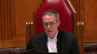
And I’m wondering, my colleague Justice Roe earlier alerted us to the relevance of denunciation as opposed to deterrence in understanding the accountability function.
It’s interesting that denunciation hasn’t come up in the discussion much up until now.
What’s your sense of its relevance under the pressing and substantial objective?
Is parliament seeking to denounce as much as it was to deter?
Speaker 11 (02:04:32): Thank you Justice Kessler and in our submissions that is precisely one of the important aspects of the accountability objective is this is this denunciation which is which is distinct from deterrence which is a consequentialist ideal but it’s this denunciation it’s this communication it’s this denotation that what are society’s basic code of values and I think that that is something that is very important that this that that this 33.1 works toward and achieves and that’s an objective and that’s and that’s the point that that that I’m hoping to make here today.
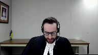
In criminalizing such behavior through the creation of alternative path to liability Parliament sought to bring the law into step with these values which themselves are iterations of charter values that relate to the equality and security of the person rights of women and children who are disproportionately targeted by intoxicated violence based on the record that was before Parliament and this is a distinction has to be drawn here this is not to say that a charter should yield to appease an uninformed majority’s torch and pit fork thirst for vengeance it’s distinct and and this distinction I think this court aptly drew in MCA particularly around paragraph 80.
The point here is that legislation that seeks to bring the criminal justice system in line with fundamental social values especially when those social values are informed by charter values is furthering an important aspect of a criminal justice system.
It’s about responding to the moral blameworthiness and harm that results from that blameworthiness and not just about punishing the morally innocent to take an eye for an eye so that’s that’s our submissions on on the accountability objectives that that we submit is integral both at the pressing and expansion purpose phase of the section one analysis and then also when assessing its its salutary effects and whether alternative options are meet it meet this objective in the same manner.
Moving on, I do not want to dwell on the issue of interpretation in too great detail rather than to point the the court to our written submissions at paragraph seven to 36, but I would like to take the court to 33.1 sub one.
We focus a lot on 33.1 sub two
but I think sub two is best understood in relation to sub one
and I’m going to walk through that briefly here.
So it starts by saying it is not a defense to an offense referred to in subsection three.
So there’s no need to go further unless there’s a violent general intent offense unless there’s already been a voluntary or intentional offense.
There’s no general intent offense unless there’s already been a voluntary or involuntary interference with the bodily integrity of another person that’s already in the opening word of sub one.
Then it moves on that the accused by reason of self-induced intoxication, so we have self-induced intoxication, lack the general intent or the voluntariness required to commit the offense so we have the automatism where the accused departed markedly from the standard of care in sub two.
This in our submissions is an indication that more is coming.
We have the violent offense, we have the automatism, we have the self-induced intoxication, but there’s something else and that’s what we’re looking at when we’re looking at sub two
and that’s what in our submissions, why in our submissions the phrase self-induced in that context should be read to apply to all of the the automatism, the extreme intoxication as well.
Subject any questions?
I would like to leave the interpretation question there other than to submit that we stand by our written submissions on that point.
There’s some disagreement in the written submissions before this court about how 33.1 operates.
Whether it removes a defense, whether it creates an alternative path to liability, or whether it even creates an offense.
In our submissions, I think the resolution of this question to start with an appreciation of what is the defense of automatism.
It’s not a true defense rather, but a fact that if proven leads to the failure to prove an element of the offense as traditionally defined.
Voluntariness and mens rea.
So in this case, there really is a substantive difference between a provision that removes this defense and a provision that creates an alternative path to liability for certain offenses.
In both cases, the provision acts in the exact same way and the difference is semantic whether it’s substantive.
The provision expands the existing offense provisions or creates an alternative path to liability for the existing offense provisions to allow for conviction for certain elements of that offense that were previously essential no longer need to be proven where alternative essential elements of the offense are now proven.
Justice Rowe (02:10:05): The short way of saying that is, in the absence of 33.1, it being shown that the accused was incapable of understanding what he was doing or that the act was wrong, would be a defense, but if he got himself into that state voluntarily, he can’t rely on it.
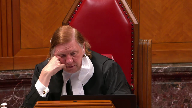
That’s the short version.
But is it inaccurate?
Speaker 11 (02:10:37): Thank you Justice Roe.
The point that I’m hoping to make there is that the difference between creating an alternative path to liability by introducing new essential elements or alternative essential elements and removing a defense that was previously thought of as a failure of proven essential element is is substantially the same and that and that it’s with that effect that that the analysis must focus rather than rather than on whether something removes a defense or rather than there is an alternative path to liability created.
To conclude seeing that that the time is limited I’d also like to point the draw the court’s attention to a decision from 1990 the Queen and Logan in which the common intention party provisions were upheld.
The parallel is not is not exact but you know in our submissions in upholding that provision the court held that differing paths to the same offense do not offend section 7 and 11d even when those differing paths have different levels of moral blameworthiness and even when those different paths left for conviction of that offense that is neither intended nor subjectively foreseeable and in our submissions there are some some parallels that can be drawn be drawn there.
Overlapping speakers (02:12:00): Um
Speaker 11 (02:12:00): subject subject to any any questions that the court might have those are my questions thank you very much
Justice Wagner (02:12:06): Lara Kincaid.
Speaker 12 (02:12:12): Thank you Chief Justice.
LEAF submits that when assessing the constitutionality of Section 33.1 all of the rights that Parliament sought to balance must be given meaningful consideration both under the Section 7 and the Section 1 analysis.
I’ll rely on our factum for the Section 7 argument and I propose to focus LEAF’s oral argument on the Section 1 analysis.
In particular, LEAF submits that Parliament’s accountability purpose is a pressing and substantial objective.
The parliamentary record makes it clear that accountability was seen as one tool for redressing the long-standing inequality experienced by women and girls who are subjected to gender-based violence and the role that intoxicated violence plays in perpetuating that inequality.
Women and children are disproportionately the victims of intoxicated violence and Section 33.1 was enacted to address that.
In the court below, both Justice Slatter and Justice Kullar described the accountability objective as holding individuals accountable for the violent acts they commit while intoxicated to the point of automatism.
And while that is of course true, the accountability objective is not simply about punishing intoxicated offenders, it’s much broader than that.
The decision about whether to hold such offenders accountable plays an important communicative role to borrow the words of my friend for the Attorney General of Saskatchewan.
It sends a message about who and what our society values and is willing to protect and at whose expense.
As one witness explained during the committee hearings, self-induced intoxicated violence against women sends the message that women are so unimportant that it’s not worth the care it takes to avoid that behavior.
Another witness testified that the extreme intoxication defense works to reinforce and excuse male violence against women.
It does that by attributing the blame to alcohol or drugs, thereby minimizing the significance of the violence and asserting that pursuant to charter values, someone in that state who physically assaults, sexually assaults, or even kills a woman is morally innocent.
When someone deliberately consumes a drug, knowing that it may cause them to lose control over their actions, they are taking a risk with the safety and lives of those around them.
As Justice Slatter put it, they are running the risk of turning themselves into an agent deprived of the ability to exercise self-control, but who retains the capacity to injure or kill.
Section 33.1 sends the message that if someone chooses to take that risk, they will be held accountable and that the law will protect those they victimize, who are disproportionately women and girls.
If offenders are not held accountable in these circumstances, women and girls will continue to bear the risk of extreme intoxicated violence.
Knight emphasized to the court that the importance of this message is not merely symbolic.
At the time of the parliamentary hearings, only 10 percent of sexual assaults were being reported, a number that remains roughly the same today.
There was evidence before Parliament that if the extreme intoxication defence was available, it would discourage reporting by sending the message that violence against women is tolerated or excusable.
There was also evidence that the availability of the defence could affect decisions about the founding and prosecution of these crimes when women did choose to report them.
All of this evidence showed the link between accountability and access to justice for women and girls.
Leaf submits that that fact must be recognized in the Section 1 analysis to ensure that all the Charter rights in play are given meaningful consideration.
Today, more than 25 years after Section 33.1 was enacted, gender-based violence continues to have a devastating effect on women and girls, and intoxication remains closely linked to that violence.
In 2015, almost 90 percent of victims of police-reported sexual assaults were women.
Three years later, in 2018, only five percent of the most serious incidents of sexual assault came to the attention of police.
Between 2016 and 2021 in Canada, a woman or girl was killed on average once every two and a half days.
And between 2007 and 2017, 63 percent of women and girls who were killed died at the hands of an intoxicated aggressor.
So in light of that, when considering the accountability objective, Leaf submits that this Honourable Court must consider the extensive evidence about the important role accountability plays in redressing the inequality experienced by women and girls.
Thank you very much.
Justice Wagner (02:17:24): Thank you.
Any reply, Ms. Bidolf?
Speaker 2 (02:17:28): Yes, thank you.
Just four points in reply.
First, my friend from the Attorney General of Alberta claims that Mr. Brown, the facts established that Mr. Brown had snacked on mushrooms indiscriminately and consumed 12 to 14 ounces of alcohol.
In my submission, that is contrary to the findings of fact that were made by the trial judge and I would refer this court to paragraph 39 of the trial decision where the court held that there was no reliable evidence of how much mushrooms or alcohol were consumed.
Second, in my submission where the Attorney General of Canada is asking you to read in a mental element to the offense, he’s confusing two things.
There’s a difference between reading in a mental element where none is stipulated in the text of the provision and reading in a mental element that contradicts the actual text of the provision.
Section 33.1 has a mental element.
It deems the standard of marked departure to be met based only on the consequence, the commission of a violent offense.
The Attorney General of Canada is asking this court to rewrite the provision under the guise of purposive interpretation and our submission for purposive interpretation cannot be stretched that far.
My third point is with respect to the argument of the Attorney General of Saskatchewan and the so-called communicative purpose of the provision.
In my submission, that purpose is stated at too broad a level of abstraction to be able to anchor the Oakes analysis in this case.
All criminal law denounces the conduct that it targets.
That’s the point of criminal law.
If this court were to adopt this communicative purpose as the purpose of the provision, imagine how the Oakes analysis would go.
If the purpose of the provision is to denounce all violent conduct, criminalizing all violent conduct is obviously rationally connected to that purpose.
Any alternative that would result in some violent conduct escaping criminal liability could not substantially achieve the purpose of criminalizing and denouncing all violent conduct.
So if you were to adopt that as the purpose of the provision, you might as well skip straight to the final proportionality analysis because the rest of the test becomes redundant.
My final submission is with respect to the argument of the Attorney General of British Columbia and the remedy that should be imposed.
The Attorney General of British Columbia asks this court to read in a marked departure standard at the consumption stage.
In my submission, that would be directly contrary to the intent of Parliament, and you can see that in the statement of Minister Rock at second reading.
He stated that it was Parliament’s intent that there be no need for the Crown to prove anything on a case-by-case basis.
Parliament’s intention was that proof of intoxication would be proof of liability, full stop.
Further, if this court were to accept the argument that it should substantially rewrite the provision through a reading in, this would create in my submission both an institutional problem and a rule of law problem.
It would create an institutional problem because this court is not a legislator.
Its role is to interpret the law as written by Parliament and not to write the law for Parliament.
It creates a rule of law problem because this sort of extensive reading in erodes the primacy of the text of a written statutory provision.
It would mean that Section 33.1 does not mean what it says, but rather it means what this court says it should say.
If such a significant amendment is necessary, then in my submission the proper remedy is to strike down the provision as a whole and give Parliament the chance to fix the constitutional issue.
Subject to any further questions, those are our submissions in reply.
Thank you very much.
Justice Wagner (02:21:08): Thank you all for your submissions.
The court will take the case under advisement.
Thank you.